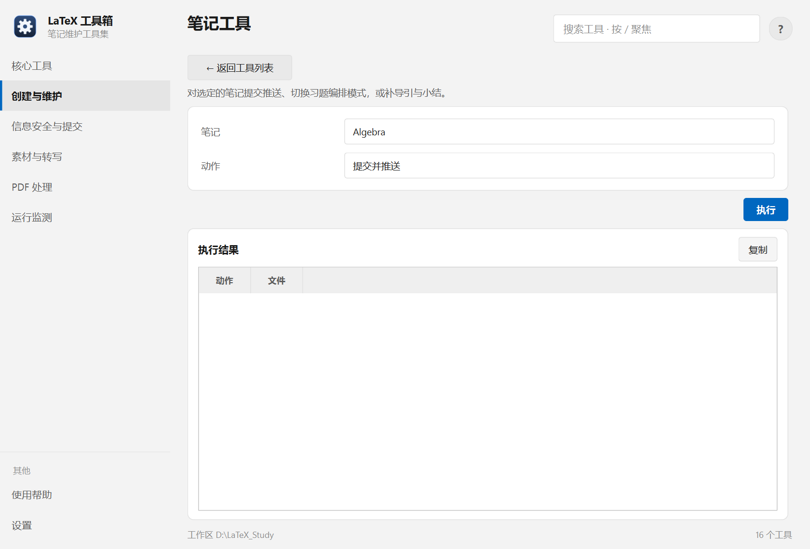

帮助目录 · 创建与维护
对某一本书做三件事：提交推送、切换习题编排模式、补导引与小结的骨架。
| 面板入口 | 创建与维护 → 卡片「单本笔记工具」→ 选书与动作 → 执行 |
|---|---|
| 命令行 | python tools/note_tools/note_tools.py |

先选书，再选动作；「补导引与小结」会多出范围与免确认两项。
main.tex 的目录）。| 项 | 说明 |
|---|---|
| 笔记 | 下拉选择，来自实时扫描，不会列出已删除的书。 |
| 动作 | 三选一。 |
| 补哪些 | both = 导引与小结都补；intro 只补导引；summary 只补小结。 |
| 免确认直接写入 | 关掉后每处写入前都会列出来问一次。默认关。 |
python tools/note_tools/note_tools.py --note General_Topology --action commit python tools/note_tools/note_tools.py --note General_Topology --action intro-summary --scope both python tools/note_tools/note_tools.py --note General_Topology --action exercise
| 内容 | 位置 |
|---|---|
| 改的文件 | 该笔记目录下的 index.tex / main.tex / structure.sty |
| 读的配置 | manager.conf |
\section* 与 \unnumberedsection 骨架。按项目约定，这些块应保持注释状态、只在正在写的那一层打开 —— 工具插入后不会自动注释，记得手工收紧。Q：下拉里没有我要的书
A：扫描规则是「笔记根下含 main.tex 的目录」。新书还没建 main.tex 就不会出现，先用「新建笔记」。
Q：补小结时报「正文没有 \label」
A：小结里的 \ref / \cref 需要正文有对应 label。缺 label 时只生成标题不生成引用。
Q：提交后远程没更新
A：看结果里是否写了 push 失败。常见原因是远程有别人的提交，需要先拉。
Q：习题模式会不会删掉我的正文？
A：不会删，只是把题目与解答分到不同文件并调整入口。改动前有 git 兜底，建议先提交一次。